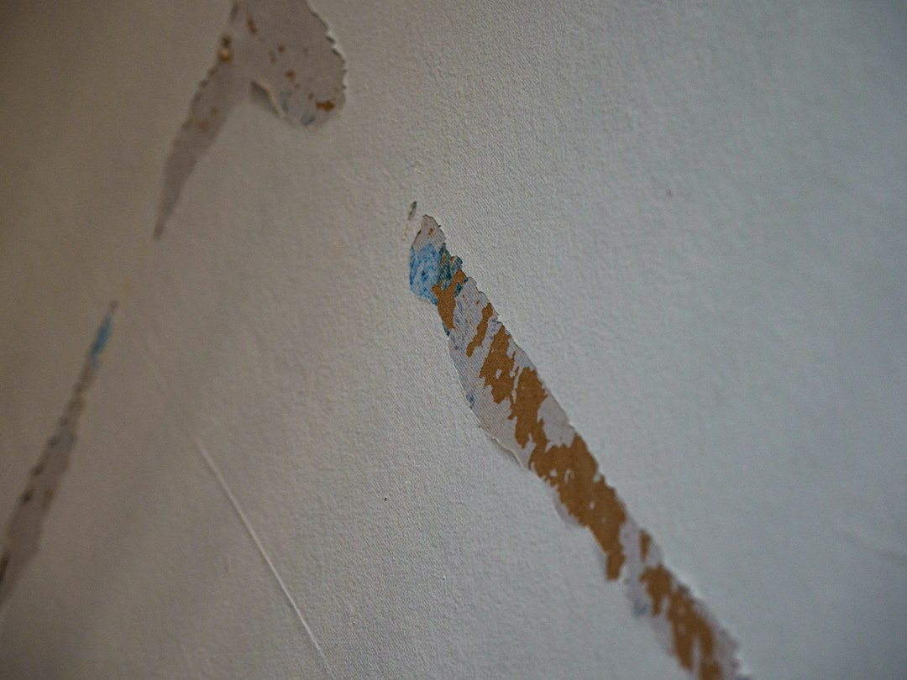

For homeowners evaluating popcorn removal Orlando, a complete ceiling service can simplify the project because removal, repair, texture, and painting can be managed by the same team. This helps maintain consistency between each stage of the work.
PopcornGone begins by assessing the existing ceiling. Conditions can vary significantly between Orlando homes. Some ceilings have never been painted, while others have received several layers of paint. Some drywall surfaces remain in relatively good condition beneath the texture, while others contain visible joints, nail pops, cracks, previous repairs, or stains.
PopcornGone provides popcorn removal Orlando services for homeowners seeking professional removal of outdated textured ceilings. The process is designed to take an existing popcorn ceiling through preparation, removal, drywall assessment, repairs, refinishing, painting, and cleanup so the homeowner receives a completed modern ceiling surface.
popcorn texture removal orlando

Property age is another consideration. Some older ceiling materials may contain asbestos, meaning testing can be appropriate before removal. Homeowners should make sure the ceiling material has been properly assessed where its composition is uncertain.
Before popcorn ceiling removal begins, walls, floors, furniture, and fixtures are protected. Plastic barriers, drop cloths, containment materials, HEPA filtration, and vacuum systems can help control dust and debris. Maintaining an organized work area is an important part of professional popcorn removal Orlando.
Smooth ceilings are also available for homeowners who prefer minimal visible texture. Creating a professional smooth finish can require skim coating and careful sanding. The underlying surface must be prepared thoroughly because smooth ceilings can reveal drywall irregularities more readily than textured finishes.
PopcornGone provides professional ceiling removal throughout Orlando and surrounding areas. Call 407-484-4264 to schedule a free in-home estimate and receive information about your popcorn ceiling, removal options, drywall repairs, finishing choices, project pricing, scheduling, cleanup, and two-year labor warranty.
Cleanup is included as part of the professional process. Popcorn ceiling material, sanding debris, plastic coverings, and other project waste are collected and removed. The work area is cleaned after the agreed ceiling services have been completed.
When talking about popcorn removal Orlando, the existing ceiling condition is an important starting point. PopcornGone evaluates whether the ceiling has been painted, the condition of the drywall, ceiling height, accessibility, room dimensions, and visible repair requirements. These factors help determine the appropriate removal and refinishing process.
After the texture has been removed, PopcornGone prepares the exposed drywall. Ceiling repair may involve addressing nail pops, cracks, drywall joints, old patches, or uneven compound. Proper preparation provides a better base for the replacement finish.
Square footage, ceiling height, painted texture, accessibility, drywall repairs, selected finish, skim coating, and painting all affect the work required. PopcornGone provides free in-home estimates to assess these conditions and provide property-specific information.
The homeowner can then select the desired replacement finish. Knockdown texture creates a modern patterned surface. Mini knockdown provides a more subtle alternative. Orange peel offers a fine, consistent texture. Smooth ceilings provide a flat finish without pronounced texture.

After the new ceiling finish has dried, PopcornGone applies premium stain-blocking paint. Stain-blocking products can help prevent previous discoloration from appearing through the new painted surface. The final paint application provides a consistent ceiling appearance and completes the refinishing process.
Older ceiling materials can present additional considerations. Depending on when an Orlando property was built, asbestos testing may be appropriate before removing the existing popcorn ceiling. The material should be assessed before disturbance when there is uncertainty concerning its composition.
For homeowners planning popcorn removal Orlando, PopcornGone provides a complete professional service covering the existing ceiling from initial inspection through final finishing and cleanup. The company specializes in removing outdated popcorn texture and preparing Orlando ceilings for knockdown, mini knockdown, orange peel, or smooth finishes.
Pricing for popcorn removal Orlando varies according to project requirements. General prices may fall between approximately $1.25 and $6.00 per square foot, but a specific estimate is more useful when planning a project.
For professional popcorn removal Orlando, contact PopcornGone at 407-484-4264. Homeowners can schedule a free in-home estimate and receive information about removal options, ceiling repairs, texture choices, smooth finishes, painting, pricing, scheduling, and warranty coverage.

The amount of preparation required can vary between these options. Smooth ceilings generally require particularly consistent drywall because there is no significant texture to hide imperfections. Skim coating and detailed sanding may therefore be included when producing a smooth finish.
Popcorn removal can be completed in individual rooms or throughout multiple areas of an Orlando property. Large living rooms, bedrooms, hallways, kitchens, family rooms, vaulted spaces, and other ceilings can each be assessed according to their dimensions and condition.
When talking about popcorn removal Orlando, homeowners should consider the contractor's ability to complete the entire project. Removing popcorn without correcting underlying drywall or preparing the replacement finish can leave additional work for the property owner. PopcornGone combines removal, repairs, finishing, painting, and cleanup within a coordinated service.